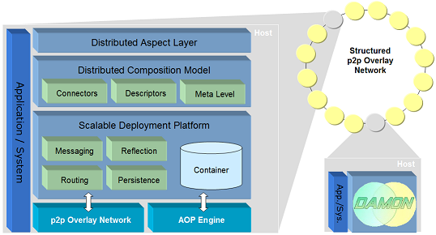
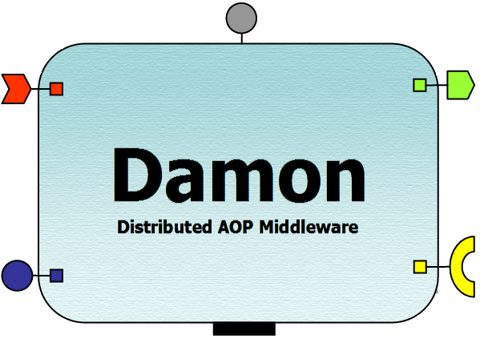

|
|
Damon (Distributed AOP Middleware on top of a p2p Overlay Network)
is a fully distributed AOP middleware built on top of a
structured peer-to-peer and dynamic AOP substrates. Its main aim is to provide the
necessary abstractions and services to develop distributed aspects
in large-scale scenarios.

Scalable Deployment
Platform
-
A decentralized aspect
container: that provides the necessary infrastructure to launch and
weave aspects in a decentralized and distributed way.
-
Location and Discovery Services: supported by a
p2p
locator model.
-
Aspect Life Cycle: formed manly by the deployment, activation
and availability phase
-
Underlying
p2p functionalities: necessary
abstraction layer for network and instrumentation services.
-
Routing and
Messaging : enables
efficient routing mechanisms for remote services and creates a communication bus among the active
distributed aspects.
-
p2p Abstractions are a
mapping from a set of large-scale communication services, like
one-to-one and one-to-many, into our distributed model. Current
abstractions are "direct", "hopped", "any", "many", and "multi"
ones.
-
p2p Overlay Layer :
provided by
EasyPastry project.
Distributed Composition Model
-
Source Hooks
provide abstract connection between local interception and remote
services.
-
Remote
Connections
provide remote pointcuts and advices, and remote methods and
invocations mechanisms.

2010
Rubén Mondéjar.
Distributed AOP Middleware for Large-Scale Scenarios.
PhD Thesis Dissertation. Tarragona, 29 April 2010. ISBN 978-84-693-5426-1
Gérald Oster, Rubén Mondéjar, Pascal Molli, and Sergiu Dumitriu.
Building
a Collaborative Peer-to-Peer Wiki System on a Structured Overlay.
Elsevier Computer Networks.
Vol.
54, No. 12, June 2010, pp. 1939 - 1952.
ISSN: 1389-1286.
2009
Gérald Oster, Pascal Molli, Sergiu Dumitriu, and Ruben Mondejar. UniWiki: A Collaborative P2P System for Distributed Wiki Applications.
Accepted on the 19th IEEE International Workshops on Enabling Technologies: Infrastructures for Collaborative Enterprises (WETICE-2009). Groningen, Netherlands, June-July 2009.
Rubén Mondéjar, Pedro García, Carles Pairot, Pascal Urso, and Pascal Molli.
Designing a Distributed AOP Runtime Composition Model.
Accepted for publication on to the 24th Annual ACM Symposium on Applied Computing (SAC 2009), Honolulu, Hawaii (USA). March 2009.
Gérald Oster, Pascal Molli, Sergiu Dumitriu, and Ruben Mondejar.
UniWiki: A Reliable and Scalable Peer-to-Peer System for Distributing Wiki Applications.
Research Report RR-6848, LORIA -- INRIA Nancy Grand Est (France), February 2009.
2008
Rubén Mondéjar, Pedro García, Carles Pairot and Antonio F. Gómez
Skarmeta.
Building a Distributed AOP Middleware for Large Scale Systems.
Accepted for publication on 7th International Conference on
Aspect-Oriented Software Development (AOSD 2008), Next Generation
Aspect Oriented Middleware Workshop (NAOMI 2008). Brussels, Belgium,
March - April 2008. ACM ISBN: 978-1-60558-148-4/08/04.
2007
Rubén Mondéjar, Pedro
García, Carles Pairot and Antonio F. Gómez Skarmeta.
Adaptive Peer-to-Peer Web
Clustering using Distributed Aspect Middleware (Damon).
Accepted for publication on the 7th International
Conference on Web Engineering (ICWE’07). Workshop on on
Adaptation and Evolution in Web Systems Engineering
(AEWSE'07). Como, Italy, July 2007.
CEUR Workshop Proceedings, ISSN 1613-0073.
2006
Rubén
Mondéjar, Pedro García, Carles Pairot and Antonio F. Gómez Skarmeta.
Damon: a
Decentralized Aspect Middleware Built on top of a Peer-to-Peer
Overlay Network. Accepted for publication on Proceedings
of the 14th ACM SIGSOFT Symposium on Foundations of Software
Engineering (FSE 2006). Workshop on Software Engineering and
Middleware (SEM 2006). Portland (Oregon), USA, November 2006.
ISBN 1-59593-585-1
Rubén Mondéjar Andreu,
PhD research collaborator and part-time instructor in the Department of
Computer Science and Mathematics at Universitat Rovira i Virgili in
Tarragona, Catalonia, Spain. Contact <ruben.mondejar@urv.cat>
Pedro García López, full-time professor in the Department of
Computer Science and Mathematics at Universitat Rovira i Virgili in
Tarragona, Catalonia, Spain. Contact <pedro.garcia@urv.cat>
Carles Pairot Gavaldà, PhD
research collaborator in the Department of
Computer Science and Mathematics at Universitat Rovira i Virgili in
Tarragona, Catalonia, Spain. Contact <carles.pairot@urv.cat>
|

 Downloads
Downloads